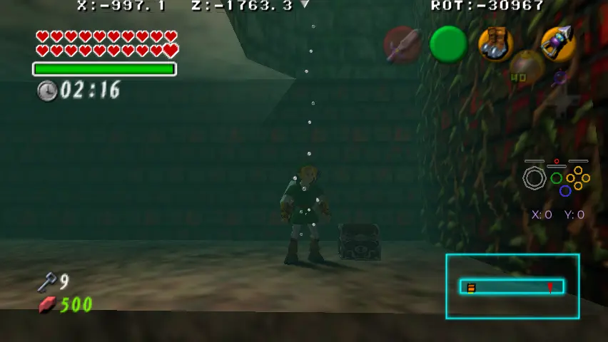
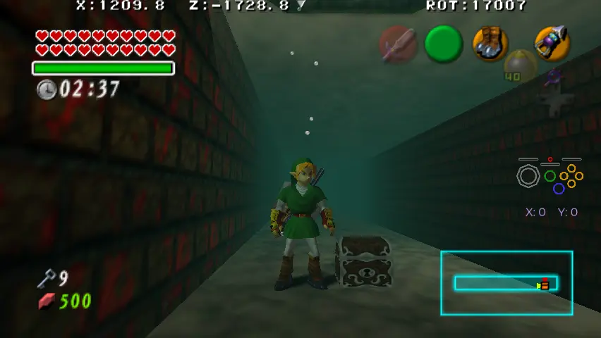
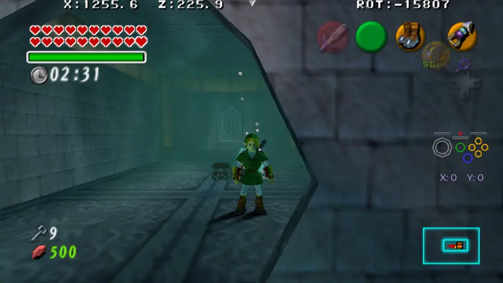
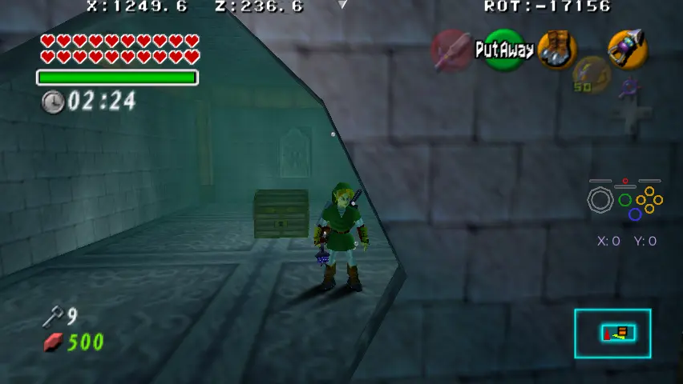
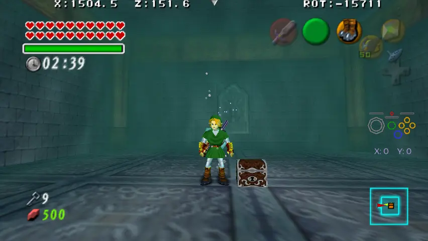
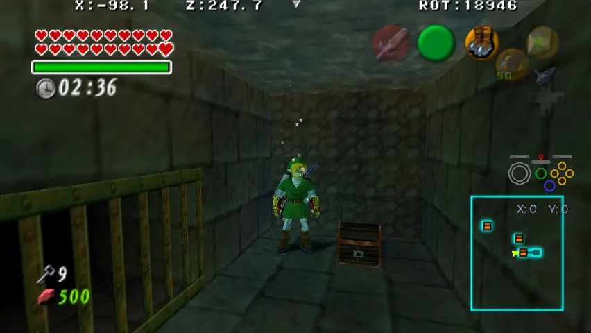
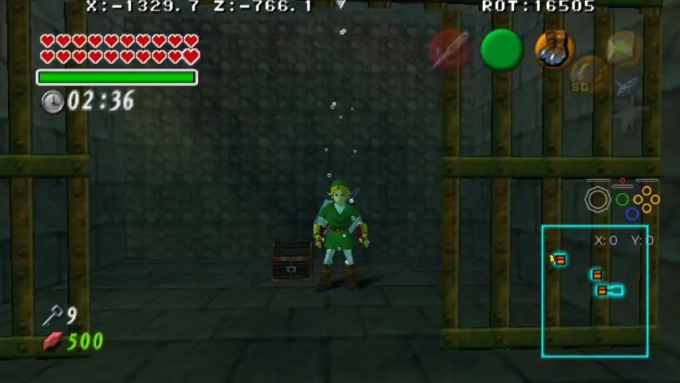

By default, underwater chests cannot be opened, requiring you to drain the water first. This restriction can be removed by first hookshotting the chests.
Forest Temple Well Chest.

Master Quest Forest Temple Well Chest.

Water Temple Cracked Wall Chest.

Master Quest Water Temple Longshot Chest.

Water Temple Shell Blade Room Chest.

Bottom of the Well Underwater Chests.

